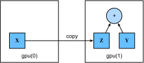

GPU¶
Trong tab_intro_decade, chúng ta đã minh họa sự tăng trưởng nhanh chóng của tính toán trong hai thập kỷ qua. Tóm lại, hiệu suất GPU đã tăng gấp 1000 lần mỗi thập kỷ kể từ năm 2000. Điều này mang lại cơ hội tuyệt vời nhưng cũng cho thấy rằng có nhu cầu đáng kể cho hiệu suất như vậy.
Trong phần này, chúng ta bắt đầu thảo luận về cách khai thác hiệu suất tính toán này cho nghiên cứu của bạn. Đầu tiên bằng cách sử dụng một GPU duy nhất và sau đó, cách sử dụng nhiều GPU và nhiều máy chủ (với nhiều GPU).
Cụ thể, chúng ta sẽ thảo luận về cách
sử dụng một GPU NVIDIA duy nhất cho các tính toán.
Đầu tiên, đảm bảo bạn có ít nhất một GPU NVIDIA được cài đặt.
Sau đó, tải xuống driver NVIDIA và CUDA
và làm theo các lời nhắc để đặt đường dẫn thích hợp.
Sau khi các chuẩn bị này hoàn tất,
lệnh nvidia-smi có thể được sử dụng
để (xem thông tin card đồ họa).
Trong PyTorch, mọi mảng đều có một thiết bị; chúng ta thường gọi nó là ngữ cảnh. Cho đến nay, theo mặc định, tất cả biến và tính toán liên quan đã được gán cho CPU. Thông thường, các ngữ cảnh khác có thể là các GPU khác nhau. Mọi thứ có thể trở nên phức tạp hơn khi chúng ta triển khai công việc trên nhiều máy chủ. Bằng cách gán các mảng cho các ngữ cảnh một cách thông minh, chúng ta có thể giảm thiểu thời gian dành để truyền dữ liệu giữa các thiết bị. Ví dụ, khi huấn luyện mạng nơ-ron trên máy chủ có GPU, chúng ta thường muốn các tham số mô hình tồn tại trên GPU.
Để chạy các chương trình trong phần này, bạn cần ít nhất hai GPU. Lưu ý rằng điều này có thể xa xỉ đối với hầu hết các máy tính để bàn nhưng dễ dàng có sẵn trên đám mây, ví dụ: bằng cách sử dụng các thực thể đa GPU AWS EC2. Hầu hết tất cả các phần khác không yêu cầu nhiều GPU, nhưng ở đây chúng ta chỉ muốn minh họa luồng dữ liệu giữa các thiết bị khác nhau.
[Thiết bị Tính toán]¶
Chúng ta có thể chỉ định các thiết bị, chẳng hạn như CPU và GPU, để lưu trữ và tính toán. Theo mặc định, tensor được tạo trong bộ nhớ chính và sau đó CPU được sử dụng cho tính toán.
Trong PyTorch, CPU và GPU có thể được chỉ định bằng torch.device('cpu') và torch.device('cuda').
Cần lưu ý rằng thiết bị cpu
có nghĩa là tất cả CPU vật lý và bộ nhớ.
Điều này có nghĩa là các tính toán của PyTorch
sẽ cố gắng sử dụng tất cả lõi CPU.
Tuy nhiên, một thiết bị gpu chỉ đại diện cho một card
và bộ nhớ tương ứng.
Nếu có nhiều GPU, chúng ta sử dụng torch.device(f'cuda:{i}')
để đại diện cho GPU thứ \(i\) (\(i\) bắt đầu từ 0).
Ngoài ra, gpu:0 và gpu tương đương nhau.
def cpu():
"""Get the CPU device."""
return torch.device('cpu')
def gpu(i=0):
"""Get a GPU device."""
return torch.device(f'cuda:{i}')
cpu(), gpu(), gpu(1)
Chúng ta có thể (truy vấn số GPU có sẵn.)
Bây giờ chúng ta [định nghĩa hai hàm tiện lợi cho phép chúng ta chạy code ngay cả khi GPU yêu cầu không tồn tại.]
def try_gpu(i=0):
"""Return gpu(i) if exists, otherwise return cpu()."""
if num_gpus() >= i + 1:
return gpu(i)
return cpu()
def try_all_gpus():
"""Return all available GPUs, or [cpu(),] if no GPU exists."""
return [gpu(i) for i in range(num_gpus())]
try_gpu(), try_gpu(10), try_all_gpus()
Tensor và GPU¶
Theo mặc định, tensor được tạo trên CPU. Chúng ta có thể [truy vấn thiết bị nơi tensor được đặt.]
Điều quan trọng cần lưu ý là bất cứ khi nào chúng ta muốn thực hiện phép toán trên nhiều số hạng, chúng cần phải trên cùng một thiết bị. Ví dụ, nếu chúng ta cộng hai tensor, chúng ta cần đảm bảo cả hai đối số tồn tại trên cùng một thiết bị---nếu không, framework sẽ không biết nơi lưu kết quả hoặc thậm chí cách quyết định nơi thực hiện tính toán.
Lưu trữ trên GPU¶
Có một số cách để [lưu trữ tensor trên GPU.]
Ví dụ, chúng ta có thể chỉ định thiết bị lưu trữ khi tạo tensor.
Tiếp theo, chúng ta tạo biến tensor X trên gpu đầu tiên.
Tensor được tạo trên GPU chỉ tiêu thụ bộ nhớ của GPU này.
Chúng ta có thể sử dụng lệnh nvidia-smi để xem mức sử dụng bộ nhớ GPU.
Nói chung, chúng ta cần đảm bảo rằng chúng ta không tạo dữ liệu vượt quá giới hạn bộ nhớ GPU.
Giả sử bạn có ít nhất hai GPU, code sau sẽ (tạo một tensor ngẫu nhiên, Y, trên GPU thứ hai.)
Sao chép¶
[Nếu chúng ta muốn tính X + Y,
chúng ta cần quyết định nơi thực hiện phép toán này.]
Ví dụ, như được hiển thị trong fig_copyto,
chúng ta có thể chuyển X sang GPU thứ hai
và thực hiện phép toán ở đó.
Đừng chỉ đơn giản cộng X và Y,
vì điều này sẽ dẫn đến ngoại lệ.
Engine thời gian chạy sẽ không biết phải làm gì:
nó không thể tìm thấy dữ liệu trên cùng thiết bị và thất bại.
Vì Y tồn tại trên GPU thứ hai,
chúng ta cần di chuyển X đến đó trước khi có thể cộng hai cái.

Bây giờ [dữ liệu (cả Z và Y) đều ở trên cùng GPU, chúng ta có thể cộng chúng.]
Nhưng nếu biến Z của bạn đã tồn tại trên GPU thứ hai thì sao?
Điều gì xảy ra nếu chúng ta vẫn gọi Z.cuda(1)?
Nó sẽ trả về Z thay vì tạo bản sao và phân bổ bộ nhớ mới.
Ghi chú Phụ¶
Mọi người sử dụng GPU để thực hiện machine learning vì họ kỳ vọng chúng sẽ nhanh. Nhưng việc truyền các biến giữa các thiết bị thì chậm: chậm hơn nhiều so với tính toán. Vì vậy, chúng ta muốn bạn 100% chắc chắn rằng bạn muốn làm điều gì đó chậm trước khi chúng ta để bạn làm. Nếu framework deep learning chỉ tự động sao chép mà không bị sập thì bạn có thể không nhận ra rằng bạn đã viết một số code chậm.
Việc truyền dữ liệu không chỉ chậm, nó còn làm cho việc song song hóa khó khăn hơn nhiều, vì chúng ta phải đợi dữ liệu được gửi (hay đúng hơn là được nhận) trước khi có thể tiến hành các phép toán tiếp theo. Đây là lý do tại sao các phép toán sao chép nên được thực hiện với sự cẩn thận. Theo nguyên tắc chung, nhiều phép toán nhỏ tệ hơn nhiều so với một phép toán lớn. Hơn nữa, nhiều phép toán cùng một lúc tốt hơn nhiều so với nhiều phép toán đơn lẻ rải rác trong code trừ khi bạn biết mình đang làm gì. Đây là trường hợp vì các phép toán như vậy có thể bị chặn nếu một thiết bị phải đợi thiết bị kia trước khi có thể làm điều gì đó khác. Nó giống một chút như đặt cà phê của bạn trong hàng đợi thay vì đặt trước qua điện thoại và phát hiện ra rằng nó đã sẵn sàng khi bạn đến.
Cuối cùng, khi chúng ta in tensor hoặc chuyển đổi tensor sang định dạng NumPy, nếu dữ liệu không ở trong bộ nhớ chính, framework sẽ sao chép nó vào bộ nhớ chính trước, dẫn đến overhead truyền dữ liệu thêm. Thậm chí tệ hơn, bây giờ nó phụ thuộc vào global interpreter lock đáng sợ làm mọi thứ chờ Python hoàn thành.
[Mạng Nơ-ron và GPU]¶
Tương tự, một mô hình mạng nơ-ron có thể chỉ định thiết bị. Code sau đây đặt các tham số mô hình trên GPU.
Chúng ta sẽ thấy nhiều ví dụ hơn về cách chạy mô hình trên GPU trong các chương tiếp theo, đơn giản là vì các mô hình sẽ trở nên tính toán chuyên sâu hơn.
Ví dụ, khi đầu vào là tensor trên GPU, mô hình sẽ tính kết quả trên cùng GPU đó.
Hãy (xác nhận rằng các tham số mô hình được lưu trên cùng GPU.)
Cho phép trainer hỗ trợ GPU.
Tóm lại, miễn là tất cả dữ liệu và tham số đều trên cùng thiết bị, chúng ta có thể học mô hình hiệu quả. Trong các chương tiếp theo chúng ta sẽ thấy một số ví dụ như vậy.
Tóm tắt¶
Chúng ta có thể chỉ định thiết bị để lưu trữ và tính toán, chẳng hạn như CPU hoặc GPU.
Theo mặc định, dữ liệu được tạo trong bộ nhớ chính
và sau đó sử dụng CPU cho tính toán.
Framework deep learning yêu cầu tất cả dữ liệu đầu vào cho tính toán
phải trên cùng một thiết bị,
dù là CPU hay cùng một GPU.
Bạn có thể mất hiệu suất đáng kể bằng cách di chuyển dữ liệu không cẩn thận.
Một lỗi điển hình như sau: tính toán mất mát
cho mỗi minibatch trên GPU và báo cáo lại
cho người dùng trên dòng lệnh (hoặc ghi nhật ký trong NumPy ndarray)
sẽ kích hoạt global interpreter lock làm dừng tất cả GPU.
Tốt hơn nhiều là phân bổ bộ nhớ
cho việc ghi nhật ký bên trong GPU và chỉ di chuyển các nhật ký lớn hơn.
Bài tập¶
- Thử một tác vụ tính toán lớn hơn, chẳng hạn như nhân ma trận lớn, và xem sự khác biệt về tốc độ giữa CPU và GPU. Còn tác vụ với số lượng tính toán nhỏ thì sao?
- Chúng ta nên đọc và ghi các tham số mô hình trên GPU như thế nào?
- Đo thời gian để tính 1000 phép nhân ma trận--ma trận của các ma trận \(100 \times 100\) và ghi nhật ký chuẩn Frobenius của ma trận đầu ra từng kết quả một. So sánh với việc giữ nhật ký trên GPU và chỉ chuyển kết quả cuối cùng.
- Đo thời gian để thực hiện hai phép nhân ma trận--ma trận trên hai GPU cùng một lúc. So sánh với việc tính theo trình tự trên một GPU. Gợi ý: bạn nên thấy hầu như mở rộng tuyến tính.